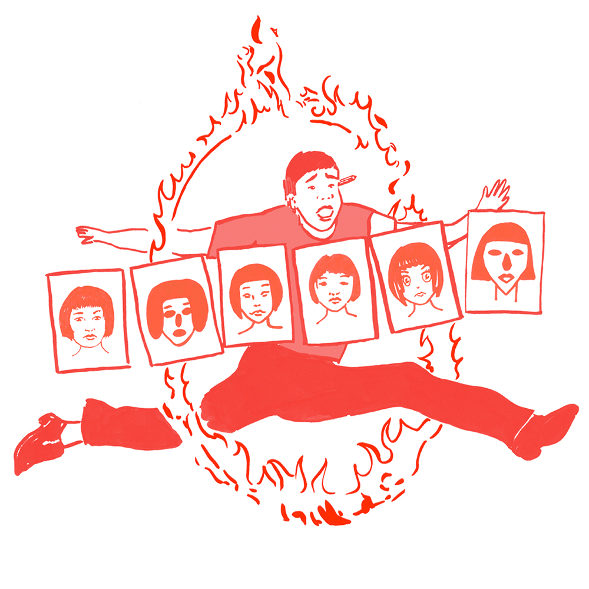

设计周刊 Design Weekly #31
🏷 设计文章
Sketch 出品：为什么我们为打造真正原生应用而自豪？
Sketch 从个性化、性能、熟悉度和灵活性等方面表达了自身对于开发 macOS 原生应用的喜爱程度。
面临 Figma 的多端强势来袭，原生 macOS 应用也有很多优势~选择使用哪一个。还是看个人的习惯和喜好了~希望两款产品都越来越好。
🏷 图标资源
Phosphor：一套灵活的图标资源
Phosphor，一套灵活的图标资源，可以用于界面、图标、演示等场景。


Tyrus：Airbnb Design 的免费插画工具包
众所周知，Airbnb 的插画因素在品牌传播中占有很重要的一席位置，与全球插画师合作的过程中挖掘到对于插画师的客户管理这个痛点。
这款来自Airbnb Design的免费工具包，通过深入解析插画师与客户合作过程中的四个关键阶段，为插画师提供了相应的教程和工具，帮助自由插画师优化管理业务，让他们有更多的时间专注于创造作品。

3000 Hands
https://www.shapefest.com/expansions/3000-hands
一个免费的多样化3D手势库。
🏷 设计技巧
7 个提升 UI 的技巧
https://marcandrew.me/7-more-tips-to-help-you-quickly-improve-your-ui
创建优美实用的用户界面是需要时间的，作者 Marc Andrew 通过自己的实践过程总结了 7 点快速改善设计的小技巧，大家一起深入了解一下吧~
🏷 设计鸡汤
设计师如何在自我怀疑中成长？
https://medium.com/yext-design/embracing-imposter-syndrome-as-a-designer-f47b582bc3a7
作者Michelle Li 通过对自我怀疑各种情况的分析，给 6 点获取自信的建议：
- 寻找在成长的兴奋点
- 了解自己的长处和短处
- 学会衡量你的成功
- 拥抱不确定性
- 依靠激情，而不是天赋
- 说出来，面对它
在这个贩卖焦虑的年代，当你感到不自信、沮丧或焦虑时，请不要担心，你并不孤独。当你经历的越多，克服的越多，你就越越来越相信自己。摆正心态，继续向前冲。我们会得到我们想要的👊。